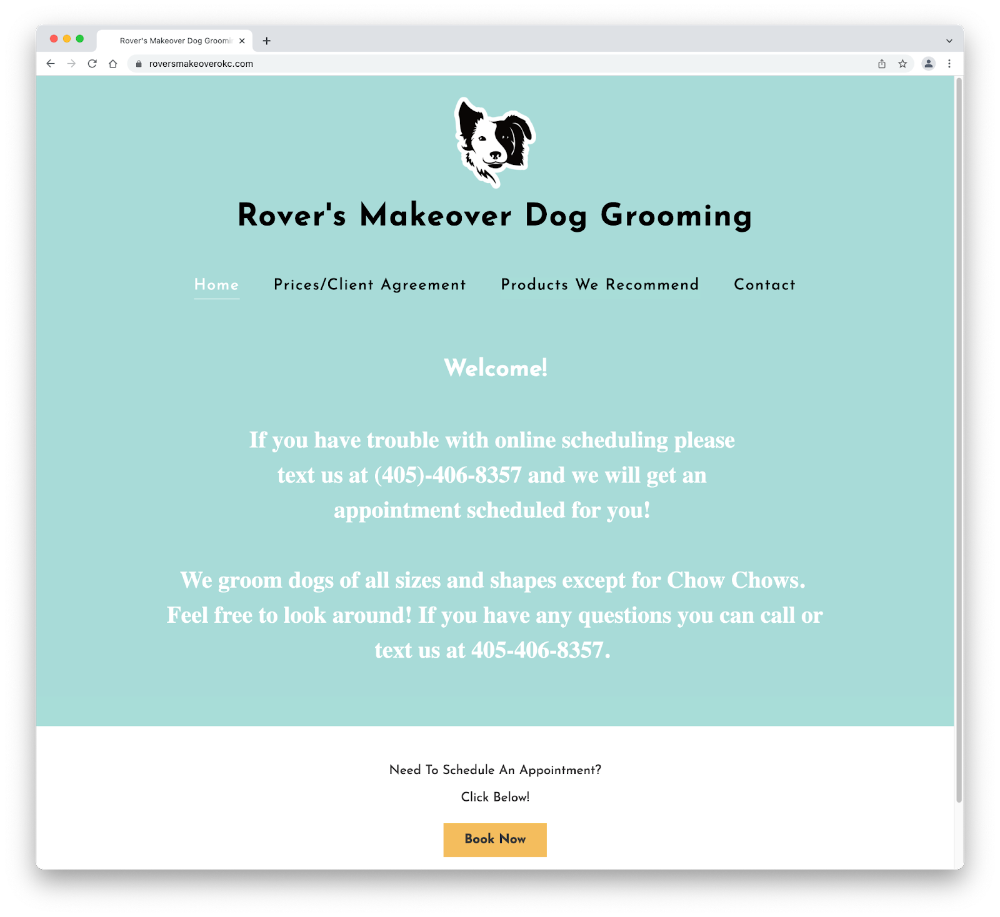
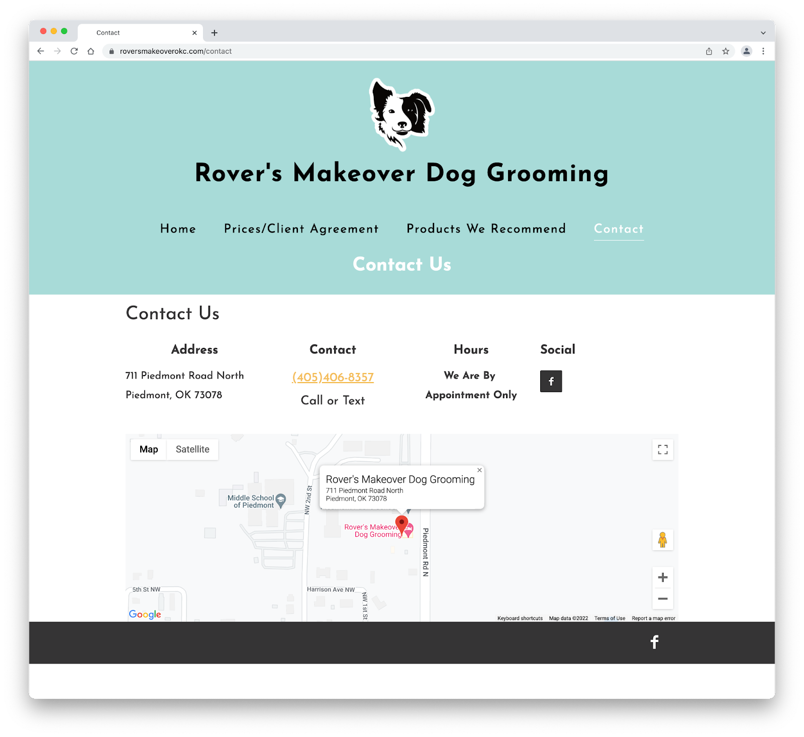
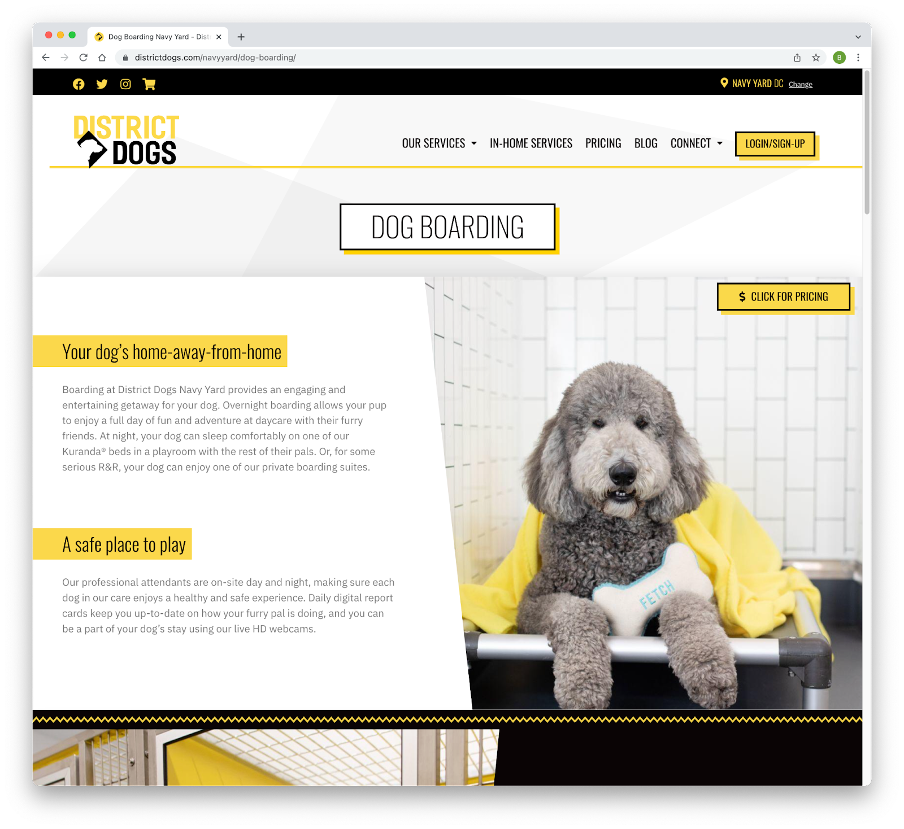
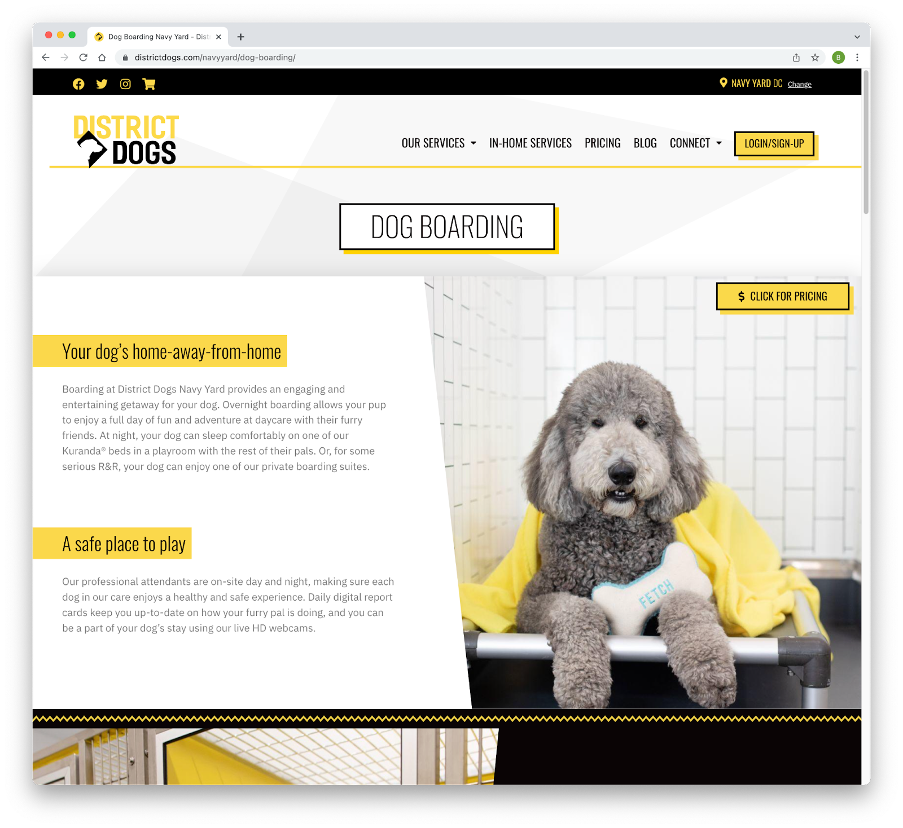

Final project proposal
Introduction
Everything Dog Grooming
Like the name of the business states, this is a dog grooming business, which offers all kinds of services: Bathing, Cutting/trimming/shaving, brushing, nail clipping, ear cleaning, teeth brushing.
Target audience
Obviously the target audience are dog owners. They have the specific need for professional dog groomers because grooming your dog at home can be quite difficult. You may not have all the tools you need at home, or even the time to groom your dog properly. Because caring for a dog can be quite time consuming. Also professionals have more knowledge on how to. And probably the most important purpose, professional grooming has health benefits for the dogs. So everyone who wants to properly care for their dog and lives in the nearby (imaginary) area of the business would and should visit this site.
Comparative analysis
Rover`s Makeover Dog Grooming
Rover´s Makeover Dog Grooming.com
 DC Petropolis

District Dogs
 

Website content
Home
Welcome to Everything Dog Grooming! We are conveniently located in Downtown San Luis Obispo, CA and offer dog grooming services in a safe, low-stress environment for your pet. Safety is our number one priority above all, for the pets and for us. We set ourselves to ambitious standards and aim to provide an above and beyond experience for the client and their beloved doggies. We are experienced in all breeds and have the knowledge to exemplify your pet’s best qualities.
[Front od the building.]
Services
I like the services page of DC petropolis very much, so I would build it quite similar, or the same really. So same information only different style Starting with the four illustrations of the different dog sizes and the additional info: weight and breed examples.
[extra small dog illustration]
[small dog illustration]
medium dog illustration]
[large dog illustration]
Than the list of all the different services: Dog Grooming Classics Full Hair Cut, Bath, Nail clipping, Ear Cleaning, Sanitary Clip Down PRICES WILL VARY DEPENDING ON THE LENGTH AND CONDITION OF YOUR PETS COAT, AND THEIR BEHAVIOR. IF YOUR DOG COMES IN MATTED, WE’LL SPEND 5 OR SO MINUTES DURING THE GROOMING TO DEMAT YOUR DOG. IF YOUR DOG IS SIGNIFICANTLY MATTED, IT WILL COST EXTRA. Prices: XS $75+ S $85+ M $100+ L $140+ Bathing Bath and Ear Cleaning Only. Prices will vary depending on the length and condition of your pets coat, and their behavior. Prices: XS $30+ S $40+ M 60+ L $100+ Puppy Grooming If your puppy (8 months or younger) is coming in for their first grooming appointment, we would appreciate it if you could contact us first so we can setup a puppy integration appointment (no charge). That way, they can visit the shop, sniff it out, play with other dogs, and leave with a pawsitive experience before they come back for their first grooming. .
References
Are you interested to see how our work looks? These are some before and after pictures we took of our furry little clients.
[Before Grooming German Shepherd.]
[After Grooming German Shepherd.]
[Before Grooming poodle.]
[After Grooming poodle.]
[Before Grooming Golden Doodle.]
[After Grooming Golden Doodle.]
[Before Grooming Bernese Mountain Dog.]
[After Grooming Bernese Mountaon Dog.]
Contact
Come find us and book an appointment.
[Google Maps Screenshot of Location.]